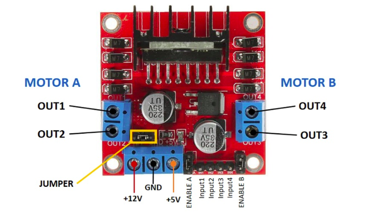

L298N Motor Driver
L298N Motor Driver
The L298N motor driver is a dual H-Bridge driver that allows you to control the speed and direction of two DC motors or one stepper motor. It can control up to 2A of current per channel, which makes it ideal for driving higher power motors.
Pin Description
- OUT1: DC motor A + terminal
- OUT2: DC motor A – terminal
- OUT3: DC motor B + terminal
- OUT4: DC motor B – terminal
- +12V: Connect the motor’s power supply
- GND: Power supply GND
- +5V: Provide 5V if the jumper is removed. Acts as a 5V output if jumper is in place
- Jumper: Jumper in place – uses the motor power supply to power up the chip. Jumper removed: you need to provide 5V to the +5V terminal. If you supply more than 12V, remove the jumper
Input Pins - Direction of Motor
- IN1: Input 1 for Motor A forward
- IN2: Input 2 for Motor A
- IN3: Input 1 for Motor B
- IN4: Input 2 for Motor B
Enable Pins - Speed
- EN1: Enable pin for Motor A
- EN2: Enable pin for Motor B
Enable Pins
The enable pins act as an ON/OFF switch for your motors:
- If you send a HIGH signal to the enable 1 pin, motor A is ready to be controlled at maximum speed
- If you send a LOW signal to the enable 1 pin, motor A turns off
- If you send a PWM signal, you can control the speed of the motor. The motor speed is proportional to the duty cycle
Connecting to Arduino
Below is a sample code to connect and control the L298N motor driver with Arduino:
// Motor A
int motorPin1 = 9; // Connect to the input pin 1 of L298N
int motorPin2 = 10; // Connect to the input pin 2 of L298N
int enablePinA = 5; // Connect to the enable pin A of L298N
// Motor B
int motorPin3 = 6; // Connect to the input pin 3 of L298N
int motorPin4 = 7; // Connect to the input pin 4 of L298N
int enablePinB = 3; // Connect to the enable pin B of L298N
void setup() {
// Motor A setup
pinMode(motorPin1, OUTPUT);
pinMode(motorPin2, OUTPUT);
pinMode(enablePinA, OUTPUT);
// Motor B setup
pinMode(motorPin3, OUTPUT);
pinMode(motorPin4, OUTPUT);
pinMode(enablePinB, OUTPUT);
}
void loop() {
// Move forward
moveForward();
delay(2000);
// Stop
stopMotors();
delay(1000);
// Move backward
moveBackward();
delay(2000);
// Stop
stopMotors();
delay(1000);
}
void moveForward() {
digitalWrite(motorPin1, HIGH);
digitalWrite(motorPin2, LOW);
analogWrite(enablePinA, 255); // Adjust the speed (0 to 255)
digitalWrite(motorPin3, HIGH);
digitalWrite(motorPin4, LOW);
analogWrite(enablePinB, 255); // Adjust the speed (0 to 255)
}
void moveBackward() {
digitalWrite(motorPin1, LOW);
digitalWrite(motorPin2, HIGH);
analogWrite(enablePinA, 255); // Adjust the speed (0 to 255)
digitalWrite(motorPin3, LOW);
digitalWrite(motorPin4, HIGH);
analogWrite(enablePinB, 255); // Adjust the speed (0 to 255)
}
void stopMotors() {
digitalWrite(motorPin1, LOW);
digitalWrite(motorPin2, LOW);
analogWrite(enablePinA, 0);
digitalWrite(motorPin3, LOW);
digitalWrite(motorPin4, LOW);
analogWrite(enablePinB, 0);
}Additional Tips
- Ensure you remove the jumper if you are supplying more than 12V to avoid damaging the motor driver.
- Use a separate power supply for your motors to avoid drawing too much current from the Arduino.
- Experiment with different PWM values to control the speed of your motors effectively.